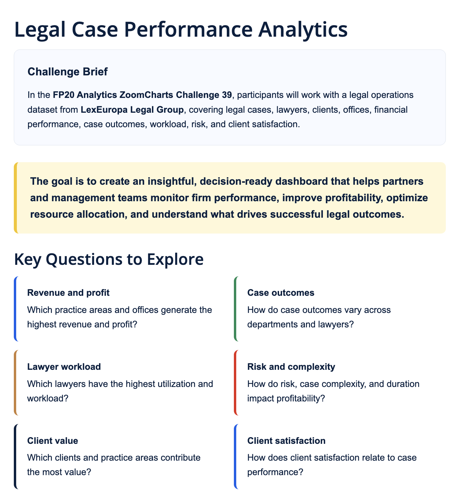
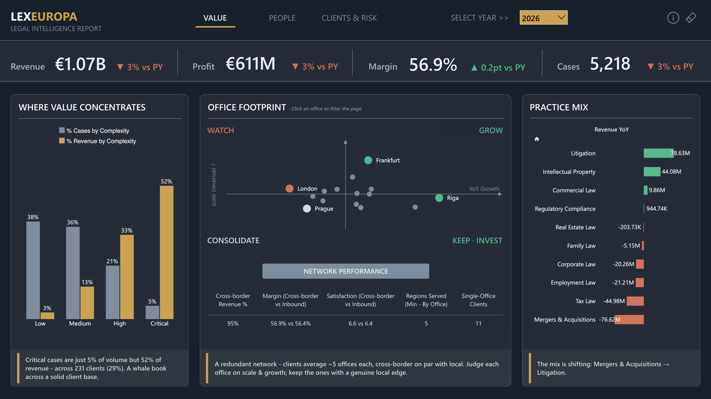
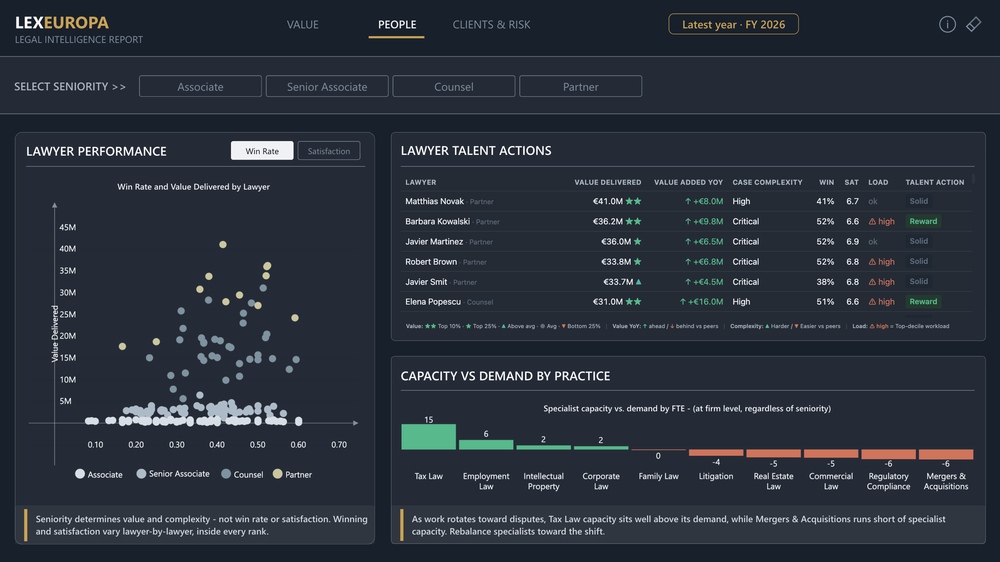
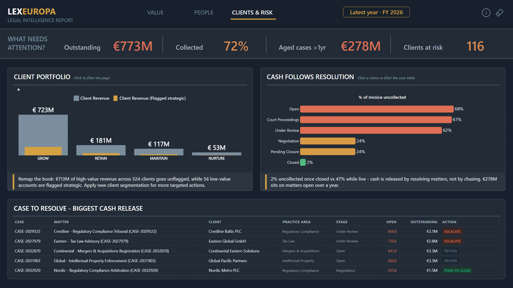
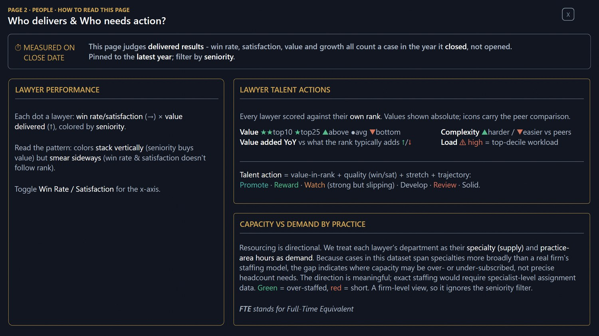
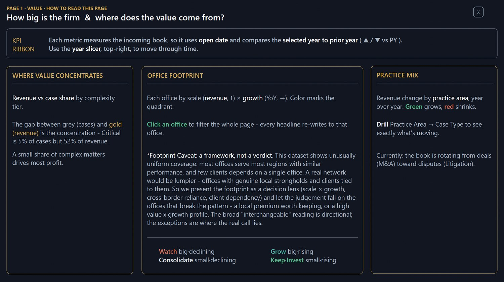

Project · FP20 Analytics Challenge 39
LexEuropa: legal case performance
Three pages, three questions a managing partner actually has to answer. Where the value comes from, who delivers it, and which money is stuck?
- Brief
- FP20 Analytics × ZoomCharts, Challenge 39 — Legal Case Performance Analytics
- Role
- Sole build — model, measures, design
- Data
- LexEuropa Legal Group operations dataset (supplied) — cases, lawyers, clients, offices, invoices
- Stack
- Power BI, DAX, Power Query, ZoomCharts Drill Down visuals
- Constraint
- Fixed dataset · max 3 pages · 1920×1080 · external judging
- Judged on
- Intuitive / Interactive / Insightful, 15 points each
- Status
- Submitted — results announced 12 Aug 2026
- Source
- .pbix on GitHub
The report
Interactive — click an office or a client segment to filter the page. Open full screen → Download as PDF
The brief
Build a decision-ready dashboard on a pan-European law firm's operations - cases, lawyers, clients, offices, outcomes, workload, risk, invoices. The brief listed six areas to explore and capped the report at three pages.
Six areas into three pages means the real work is editorial, not technical. I gave each page one central question to focus on:
- Value — how big is the firm, and where does the value come from?
- People — who delivers, and who needs action?
- Clients & Risk — which clients, and which cash, need attention?

Three questions, three different clocks
The modelling decision I'd want to be asked about. The three pages don't share a time grain, because they aren't asking about the same thing.
- Value uses open date. It measures the incoming book - what the firm is winning — so a case counts in the year it opened, and every KPI compares the selected year against the prior year.
- People uses close date. It judges delivered results — win rate, satisfaction, value, growth — so a case counts in the year it closed. Crediting a lawyer for a matter that hasn't finished would be measuring intent, not performance.
- Clients & Risk has no year slicer at all. Outstanding cash is a live book snapshot. Filtering it by year would answer a question nobody asked.
Three deliberate semantics rather than one convenient date column. Each one is stated on its own page so the reader knows which clock they're on.
Page 1 — Value

The concentration chart is one key argument of the page: critical cases are 5% of volume and 52% of revenue. A whale book indeed, fortunately with a solid client base.
Offices sit on a scale × growth quadrant — watch, grow, consolidate, keep and invest — and clicking one filters the entire page, with every narrative headline rewriting itself to the selection. Practice mix drills from practice area into case type, which is where the finding actually is: the book is rotating out of M&A and into litigation.
Page 2 — People

The scatter says something the firm would not otherwise see: the colours stack vertically but smear sideways. Seniority buys value and case complexity, but it buys neither win rate nor client satisfaction — those vary lawyer by lawyer inside every rank. Which means you can't manage talent off the org chart.
So the talent table scores every lawyer against their own rank. Absolute values are shown so the numbers stay readable, and the peer comparison rides on icons instead: value in top 10% or top 25% of their band, value added year on year against what that rank typically adds, case complexity harder or easier than peers, workload in the top decile.
Those four signals combine into a single talent action — promote, reward, watch, develop, review, solid. That's a decision rule encoded in DAX rather than a metric on a page, and it's the difference between a table someone reads and a table someone acts on.
Page 3 — Clients & Risk

Two findings drive this page. First, the firm's own strategic flags don't match its own revenue: €713M of high-value revenue across 324 clients sits unflagged, while 56 low-value accounts are flagged strategic. Second, and more useful: 68% of invoiced value is uncollected while a matter is open and 2% once it's closed. Cash isn't released by chasing invoices. It's released by resolving matters.
That reframes the whole collections question, so the page ends with a ranked worklist rather than a chart. Live matters over a year old, ordered by cash-release potential — money outstanding weighted by how much a resolution would realistically free, since a matter in negotiation frees quicker than one bound up in court. Each row gets an action: push to close, escalate, or review.
Building the manual into the report
Every page has a "how to read this page" overlay. Not a tooltip — a full panel explaining what each visual measures, what the colours mean, what's clickable, and where the framework came from.

This came from watching how many reports had gone obsolete over time. The methodology sits in an appendix nobody opens, so six months later the numbers get read wrong by someone who wasn't in the room. If a page introduces a composite score, the definition of that score belongs on the page.
Saying what the data can't support
The office footprint was the interesting problem. Plotting scale against growth implies each office has a distinct competitive position — but this dataset doesn't behave that way. Most offices serve most regions with similar performance and few clients depends on a single office. A real network is lumpier than that.

I could have drawn the quadrant anyway and let it imply more than it supports. Instead the visual is presented as a decision lens rather than a verdict, with the caveat written into the page: the broad reading is directional, and the real call is in the offices that break the pattern. The capacity-versus-demand chart carries the same treatment. It shows where resourcing is over- or under-subscribed, not a headcount number, because the dataset doesn't carry specialist-level assignment.
A report that overstates its own data is worse than one that admits its limits. In a firm, the second kind survives contact with the person who knows the business.
What I'd change
- Awaiting judging feedback — I'll add what it surfaces here rather than pretend the report has no weak points.
- The talent action rule works, but its thresholds are set by judgement rather than derived from the data. With more history I'd calibrate them against actual outcomes.
- Three pages is tight for six brief areas. Case duration and risk get less room than they deserve; with a fourth page that's where it would go.
Source
Public challenge dataset, fully open: the .pbix with the complete model and
every measure.
Repository on GitHub →